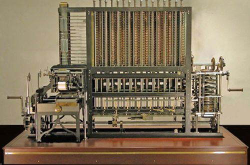

|  |
{17~19세기} |
| 623년 시카르트와 1642년 파스칼에 의해 덧셈, 뺄셈이 가능한 최초의 기계식 계산기가 출현하였고 라이프니츠에 의해 곱셈, 나눗셈까지 가능한 계산기가 나왔다. 하지만 본격적인현대 컴퓨터의 개념을 처음으로로 제시한 이는 찰스 배비지로서, 그는 차분기관이라는 기계식 계산기를 만든 뒤 오늘날의 컴퓨터와 개념적으로 같은 기계인 해석기관을 설계하였으며,최초의 프로그래머가 탄생한다. 이후 1893년에 홀러리스에 의한 천공카드 시스템이 개발되어 인구통계 및 국세 조사에 이용되었고 자동계산의 실용성이 확인된다. |
 |
{20세기} |
| 에이컨에 의해 1944년 전기 기계식 계산기인 MARK-1이 제작되었고 2차 대전 이후인 1946년 에커트&머큘리에 의해 범용 전자계산기 ENIAC(에니악)이 개발되었다. 에니악이 개발되기 1년 전헝가리 출신 수학자 존 폰 노이만이 프로그램과 데이터를 주기억장치에 두고 주기억장치에 있는 프로그램 명령어를 하나씩 수행해 나가는 방식을 제안하고, 또 오늘날까지 사용되는 2진법을 컴퓨터에 채택할 것을 주장하는데, 이 제안들이 적용된 최초의 컴퓨터인 EDSAC(에드삭)은 1949년 모리스 윌키스에 의해 개발되었다. 이로부터 현대적인 컴퓨팅이 시작되었다고 볼 수 있다. |
|
{21세기} |
| 그리고 클라우드 컴퓨팅이 발전하고 2010년대 이후부터 스마트폰 같은 웨어러블 디바이스 성능이 비약적으로 올라가면서 개인적으로 집에 PC를 가지고 있는 경우가 줄어질지도 모른다는 추측도 있으나, 클라우드 서비스를 제공하는 기업이 개인이 올린 정보를 마음대로 들여다보거나 사용자의 동의 없이 자료를 이용할 수 있는 가능성이 있어서 개인용 컴퓨터 자체가 사라지는 일은 없을 것이다. |